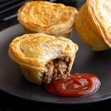

Meat Pie

Classic Aussie meat pie
"Once you try this meat pie you will never want to buy another. It's very yummy."
The great Australian Meat Pie!! Shortcrust pastry filled with slow cooked chunky pieces of beef in a rich gravy topped with golden puff pastry, this meat pie recipe requires patience but you will be regarded as a bloody legend by everybody fortunate enough to try one!
ingredients
- 1 onion finely chopped
- 500g beef mince
- 1 cup water
- 2 beef stock cubes
- 1/4 cup tomato sauce
- 2 tsp Worcestershire sauce
- 1 pinch salt and pepper *to taste
- 3 tbs plain flour
- 1 sheet shortcrust pastry
- 1 sheet puff pastry
- 1 egg to glaze
Steps
- Cook meat and onion until meat is well browned.
- Add ¾ cup water, stock cubes, sauces and seasonings.
- Bring to the boil and simmer for 15 minutes.
- Blend flour and the remaining water, add to meat, bring to the boil and simmer for 5 minutes. Cool.
- Line a pie plate with the shortcrust pastry.
- Spoon in the cooled meat mixture. Moisten edges of pastry with water.
- Top with puff pastry, pressing down to seal the edges, trim and glaze with egg.
- Bake at 230C for 15 minutes. Reduce heat to 190C and bake for a futher 25 minutes until golden.